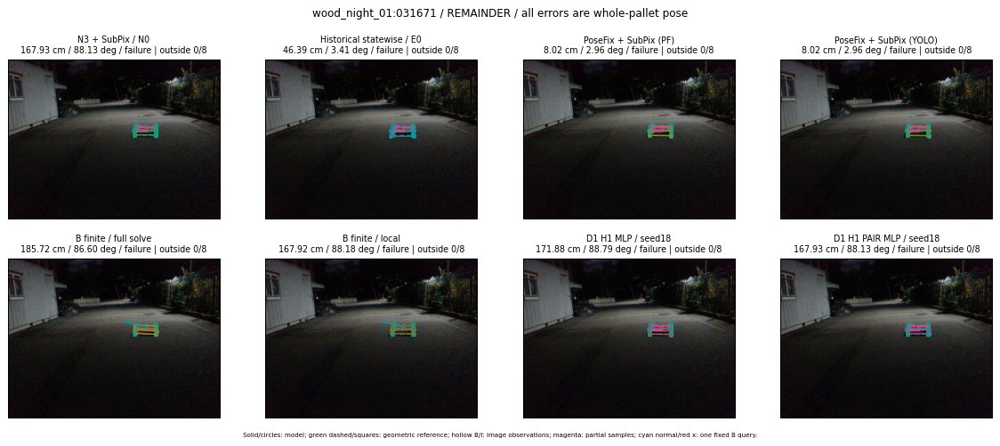
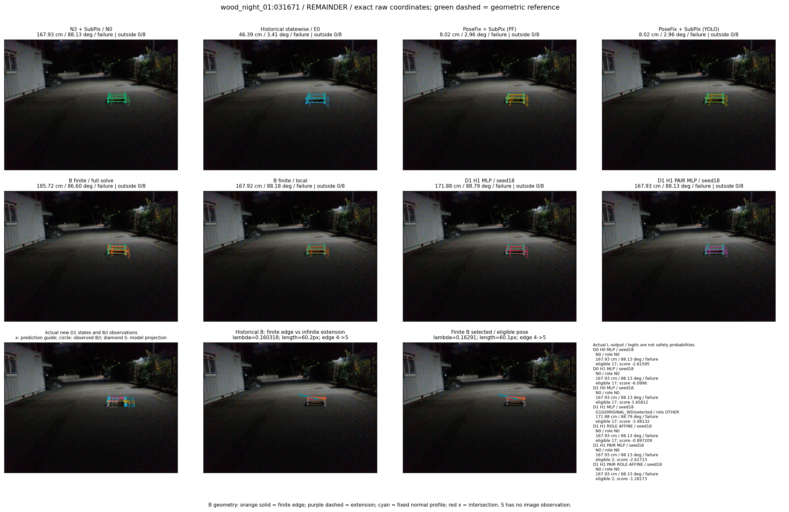

Whole-pallet pose errors; reference is a fixed geometric annotation, not certified physical GT.


Scores are uncalibrated logits. N0 retention is a numerical pose alias; it differs from H0 none or B fallback. B/I and profiles in baseline/B panels are original observations; L panels use new D1 observations. Only one deterministic supported B query is shown in a thumbnail; full support counts are below. Grey privacy rectangles edit the display copy only and are unrelated to O states; all observations were measured on original pixels. Thumbnails use JPEG quality85; detailed scientific panels are PNG.
| Method | Whole pose / cm, deg | Actual source | Selected ID | Score | Archived candidates | Eligible | N0 retained | H0 none | Fallback | Finite profiles |
|---|---|---|---|---|---|---|---|---|---|---|
| Raw YOLO + F | 32.06 cm / 4.01 deg / failure | OTHER | None | N/A | N/A | N/A | False | N/A | None | N/A |
| N3 + SubPix / N0 | 167.93 cm / 88.13 deg / failure | N0 | None | N/A | N/A | N/A | True | N/A | None | N/A |
| Historical statewise / E0 | 46.39 cm / 3.41 deg / failure | E0_REGENERATED | None | N/A | N/A | N/A | False | N/A | False | N/A |
| PoseFix raw | 173.69 cm / 87.70 deg / failure | OTHER | None | N/A | N/A | N/A | False | N/A | None | N/A |
| PoseFix + SubPix (PF) | 8.02 cm / 2.96 deg / failure | OTHER | None | N/A | N/A | N/A | False | N/A | False | historical support records 9; finite audit N/A |
| PoseFix + SubPix (YOLO) | 8.02 cm / 2.96 deg / failure | OTHER | None | N/A | N/A | N/A | False | N/A | False | historical support records 9; finite audit N/A |
| Historical L, seed18 | 167.93 cm / 88.13 deg / failure | N0 | N0 | N/A | 50 | 50 | True | True | True | N/A |
| Historical B fixed bank | 117.61 cm / 87.95 deg / failure | OTHER | G13/ORIGINAL_WD/sample/0 | N/A | N/A | N/A | False | N/A | False | N/A |
| Historical B full | 183.63 cm / 86.59 deg / failure | OTHER | NEW/B/ORIGINAL_WD/h0/G13/ORIGINAL_WD/sample/0/PROPOSED_NATIVE_YAW_0 | N/A | N/A | N/A | False | N/A | False | N/A |
| Historical edge full | 279.46 cm / 87.22 deg / failure | OTHER | NEW/edge/ORIGINAL_WD/h0/G13/ORIGINAL_WD/sample/0/PROPOSED_NATIVE_YAW_0 | N/A | N/A | N/A | False | N/A | False | N/A |
| Historical AB full | 160.70 cm / 86.72 deg / failure | OTHER | NEW/AB/ORIGINAL_WD/h0/G13/ORIGINAL_WD/sample/0/PROPOSED_NATIVE_YAW_0 | N/A | N/A | N/A | False | N/A | False | N/A |
| B finite / fixed bank | 117.61 cm / 87.95 deg / failure | OTHER | G13/ORIGINAL_WD/sample/0 | N/A | N/A | N/A | False | N/A | False | 1/1 |
| B finite / full solve | 185.72 cm / 86.60 deg / failure | OTHER | NEW_FINITE/B/ORIGINAL_WD/h0/G13/ORIGINAL_WD/sample/0/PROPOSED_NATIVE_YAW_0 | N/A | N/A | N/A | False | N/A | False | 1/1 |
| B finite / local | 167.92 cm / 88.18 deg / failure | OTHER | NEW_FINITE/B/ORIGINAL_WD/h0/N0_LOCAL_SAME_PHYSICAL_POSE/ORIGINAL_WD | N/A | N/A | N/A | False | N/A | False | 1/1 |
| Edge finite / full solve | 71.02 cm / 85.33 deg / failure | OTHER | NEW_FINITE/edge/ORIGINAL_WD/h0/G13/ORIGINAL_WD/sample/0/PROPOSED_NATIVE_YAW_0 | N/A | N/A | N/A | False | N/A | False | 1/1 |
| D0 H0 MLP / seed18 | 167.93 cm / 88.13 deg / failure | N0 | N0 | -2.6159491539001465 | 17 | 17 | True | True | True | N/A |
| D0 H0 MLP / seed19 | 167.93 cm / 88.13 deg / failure | N0 | N0 | -2.2971110343933105 | 17 | 17 | True | True | True | N/A |
| D0 H0 MLP / seed20 | 167.93 cm / 88.13 deg / failure | N0 | N0 | -3.530064821243286 | 17 | 17 | True | True | True | N/A |
| D0 H1 MLP / seed18 | 167.93 cm / 88.13 deg / failure | N0 | N0 | -6.0996012687683105 | 17 | 17 | True | False | False | N/A |
| D0 H1 MLP / seed19 | 167.93 cm / 88.13 deg / failure | N0 | N0 | -5.298534393310547 | 17 | 17 | True | False | False | N/A |
| D0 H1 MLP / seed20 | 167.93 cm / 88.13 deg / failure | N0 | N0 | -6.1066131591796875 | 17 | 17 | True | False | False | N/A |
| D1 H0 MLP / seed18 | 167.93 cm / 88.13 deg / failure | N0 | N0 | 3.4581212997436523 | 17 | 17 | True | True | True | N/A |
| D1 H0 MLP / seed19 | 167.93 cm / 88.13 deg / failure | N0 | N0 | 3.3453919887542725 | 17 | 17 | True | True | True | N/A |
| D1 H0 MLP / seed20 | 167.93 cm / 88.13 deg / failure | N0 | N0 | 3.033397912979126 | 17 | 17 | True | True | True | N/A |
| D1 H1 MLP / seed18 | 171.88 cm / 88.79 deg / failure | OTHER | G10/ORIGINAL_WD/selected | -3.4813215732574463 | 17 | 17 | False | False | False | N/A |
| D1 H1 MLP / seed19 | 180.25 cm / 87.89 deg / failure | OTHER | WD0/ORIGINAL_WD/selected | -3.1387746334075928 | 17 | 17 | False | False | False | N/A |
| D1 H1 MLP / seed20 | 167.93 cm / 88.13 deg / failure | N0 | N0 | -3.3264286518096924 | 17 | 17 | True | False | False | N/A |
| D1 H1 ROLE AFFINE / seed18 | 167.93 cm / 88.13 deg / failure | N0 | N0 | -0.8972094058990479 | 17 | 17 | True | False | False | N/A |
| D1 H1 ROLE AFFINE / seed19 | 167.93 cm / 88.13 deg / failure | N0 | N0 | -0.5306974649429321 | 17 | 17 | True | False | False | N/A |
| D1 H1 ROLE AFFINE / seed20 | 167.93 cm / 88.13 deg / failure | N0 | N0 | -0.7723875641822815 | 17 | 17 | True | False | False | N/A |
| D1 H1 PAIR MLP / seed18 | 167.93 cm / 88.13 deg / failure | N0 | N0 | -2.61712908744812 | 17 | 2 | True | False | False | N/A |
| D1 H1 PAIR MLP / seed19 | 167.93 cm / 88.13 deg / failure | N0 | N0 | -2.7380614280700684 | 17 | 2 | True | False | False | N/A |
| D1 H1 PAIR MLP / seed20 | 167.93 cm / 88.13 deg / failure | N0 | N0 | -3.766413927078247 | 17 | 2 | True | False | False | N/A |
| D1 H1 PAIR ROLE AFFINE / seed18 | 167.93 cm / 88.13 deg / failure | N0 | N0 | -1.2817325592041016 | 17 | 2 | True | False | False | N/A |
| D1 H1 PAIR ROLE AFFINE / seed19 | 167.93 cm / 88.13 deg / failure | N0 | N0 | -1.8840041160583496 | 17 | 2 | True | False | False | N/A |
| D1 H1 PAIR ROLE AFFINE / seed20 | 167.93 cm / 88.13 deg / failure | N0 | N0 | -1.5497655868530273 | 17 | 2 | True | False | False | N/A |
| Regenerated common E0 | 46.39 cm / 3.41 deg / failure | E0_REGENERATED | E0_REGENERATED | N/A | N/A | N/A | False | N/A | False | N/A |